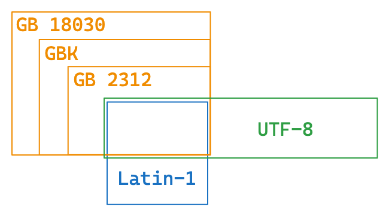
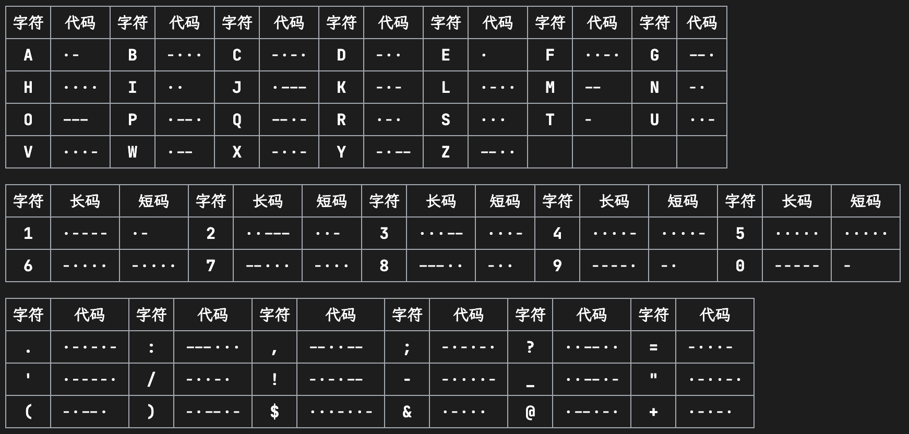
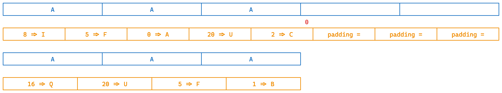
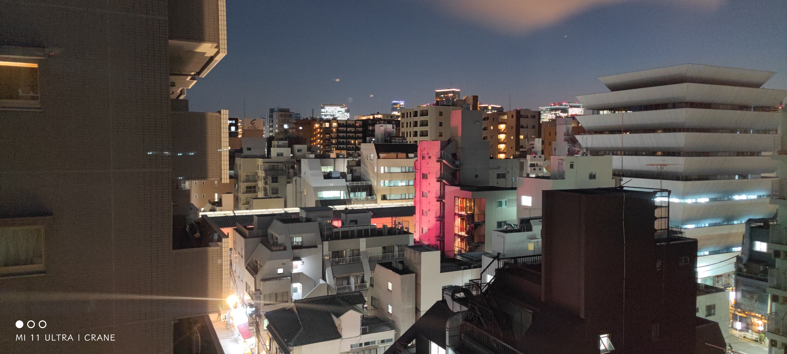

<!DOCTYPE html>
<html lang="en">
  <head>
    <meta charset="utf-8" />
    <meta name="viewport" content="width=device-width, initial-scale=1.0, maximum-scale=1.0, user-scalable=no" />

    <title>misc基础 - 2023安全攻防实践</title>
    <link rel="shortcut icon" href="./favicon.ico" />
    <link rel="stylesheet" href="./dist/reset.css" />
    <link rel="stylesheet" href="./dist/reveal.css" />
    <link rel="stylesheet" href="./dist/theme/simple.css" id="theme" />
    <link rel="stylesheet" href="./css/highlight/monokai-sublime.css" />

    <link rel="stylesheet" href="./assets/custom.css" />
    <link rel="stylesheet" href="./assets/dark.css" />

  </head>
  <body>
    <div class="reveal">
      <div class="slides"><section  data-markdown><script type="text/template">

<!-- .slide: data-background="lec1/cover.png" -->

</script></section><section ><section data-markdown><script type="text/template">
<!-- .slide: data-background="lec1/background.png" -->

<div class="middle center">
<div style="width: 100%">

# Part.1 什么是 misc？

</div>
</div>

</script></section><section data-markdown><script type="text/template">
<!-- .slide: data-background="lec1/background.png" -->

## 什么是 misc？

- miscellaneous **杂**项
-  =  -  -  -  -  

<div class="fragment" style="margin-top: 40px">

<p style="margin-bottom: 30px;">一般来讲 misc 包括的题型：</p>

- ~~签到题、签退问卷题~~
- ~~套娃题、谜语题~~

</div>

<div class="fragment" style="margin-top: 35px">

<div style="position: absolute; font-size: 10px; left:  47px; top: 405px;">Steganography</div>
<div style="position: absolute; font-size: 10px; left: 138px; top: 405px;">forensics</div>
<div style="position: absolute; font-size: 10px; left: 250px; top: 405px;">Open Source Intelligence</div>
<div style="position: absolute; font-size: 10px; left: 460px; top: 405px;">Professionally Program Coder</div>

- <span style="display: flex; justify-content: space-between;"><span>隐写、取证、OSINT（信息搜集）、PPC（编程类）</span><span>——&hairsp;&hairsp;传统 misc 题&emsp;</span></span>
- <span style="display: flex; justify-content: space-between;"><span>游戏类题目（大概也算 PPC）、工具运用类题目</span><span></span></span>
- <span style="display: flex; justify-content: space-between;"><span>编解码、古典密码</span><span>——&hairsp;&hairsp;不那么 crypto 的 crypto&emsp;</span></span>
- <span style="display: flex; justify-content: space-between;"><span>网络解谜、网站代码审计</span><span>——&hairsp;&hairsp;不那么 web 的 web&emsp;</span></span>
- <span style="display: flex; justify-content: space-between;"><span>代码审计、沙箱逃逸</span><span>——&hairsp;&hairsp;不那么 binary 的 binary&emsp;</span></span>
- <span style="display: flex; justify-content: space-between;"><span>Blockchain、IoT、AI</span><span>——&hairsp;&hairsp;新兴类别题目&emsp;</span></span>

</div>

</script></section><section data-markdown><script type="text/template">
<!-- .slide: data-background="lec1/background.png" -->

## 来看一些好玩的 misc 题吧！

- <span style="display: flex; justify-content: space-between;"><span>SCTF2023: Genshin Impact</span><span>——&hairsp;&hairsp;流量取证、编解码、信息搜集&emsp;</span></span>
- <span style="display: flex; justify-content: space-between;"><span>*CTF2022: Today</span><span>——&hairsp;&hairsp;OSINT&emsp;</span></span>
- <span style="display: flex; justify-content: space-between;"><span>AliyunCTF2023: OOBdetection</span><span>——&hairsp;&hairsp;PPC&emsp;</span></span>
- <span style="display: flex; justify-content: space-between;"><span>TQLCTF2022: Nanomaze / ZJUCTF2022: darkmaze</span><span>——&hairsp;&hairsp;游戏、PPC&emsp;</span></span>
- <span style="display: flex; justify-content: space-between;"><span>hxpCTF2021: baba is you</span><span>——&hairsp;&hairsp;游戏、二进制&emsp;</span></span>
- <span style="display: flex; justify-content: space-between;"><span>hackergame2022: 猜数字</span><span>——&hairsp;&hairsp;代码审计&emsp;</span></span>
- <span style="display: flex; justify-content: space-between;"><span>SECCON2022: find flag、txtchecker、latexipy</span><span>——&hairsp;&hairsp;代码审计、脑洞&emsp;</span></span>
- <span style="display: flex; justify-content: space-between;"><span>CISCN2023: pyshell</span><span>——&hairsp;&hairsp;沙箱逃逸&emsp;</span></span>

</script></section><section data-markdown><script type="text/template">
<!-- .slide: data-background="lec1/background.png" -->

## 如何学习 misc？

透过前面的那些例子你或许也可以看出来……？

- ~~需要提前了解很多东西？~~ 需要勇于尝试学习新东西！
    - “貌似人人都是 misc 手”
    - 很多时候题目对于选手来说都是全新领域，需要快速入门/快速上手新工具
- 需要活跃的思维（脑洞），以及跟出题人对上脑电波的运气
    - “貌似人人都不是 misc 手”
- 需要一定的编程能力
    - 至少熟练掌握 python 或其他一门语言
    - 防止用代码实现成为放宽思路的绊脚石
- 需要多做题多积累经验，尝试出出题站在出题人的角度
    - misc 朋友日常中经常：“诶，这个好像可以出成题目”

</script></section></section><section ><section data-markdown><script type="text/template">
<!-- .slide: data-background="lec1/background.png" -->

<div class="middle center">
<div style="width: 100%">

# Part.2 基础编解码知识

</div>
</div>

</script></section><section data-markdown><script type="text/template">
<!-- .slide: data-background="lec1/background.png" -->
## 编解码？加解密？哈希？

首先一定要明确一点：

- 一切信息在计算机看来都是 0 和 1
    - 编解码/加解密/哈希都是在 01 串之间进行的变换
- 为什么你看见的输入输出是字符？
    - 计算机通过字符编码规则将 01 串转换为了可见字符

三种常见的 01 串转换方式：

<div style="text-align: center; margin-top: -20px;">

</div>

一个非常常用的编解码工具：[CyberChef (official)](https://gchq.github.io/CyberChef/) /[（个人自建）](https://lab.tonycrane.cc/CyberChef)

</script></section><section data-markdown><script type="text/template">
<!-- .slide: data-background="lec1/background.png" -->
## 为什么乱码会出现？- 字符编码

- 字符编码：人类理解的字符 <=> 计算机理解的 01 串 之间的映射
- 为什么会出现乱码：用一种字符编码规则解读另一种字符编码的 01 串

常见的字符编码：

- ASCII：一共 128 个项，即每个字符可以用一个 7 位的 01 串表示（或一字节）
    - 00-1F：控制字符；20-7E：可见字符；7F：控制字符（DEL）
- Latin-1（ISO-8859-1）：扩展了 ASCII，一共 256 个项
    - 80-9F：控制字符；A0-FF：可见字符
    - 特点：任何字节流都可以用其解码
- 利用 Unicode 字符集的一系列编码
    - UTF-8 / UTF-16 / UTF-32 / UCS
- 中国国标字符集系列编码
    - GB 2312 / GBK / GB 18030-2022

</script></section><section data-markdown><script type="text/template">
<!-- .slide: data-background="lec1/background.png" -->
## Unicode 字符集与 UTF 编码

参见：https://note.tonycrane.cc/cs/unicode/

- 以平面划分，17 个平面，每个平面 65536 个码位（2 字节）
    - 通过码位可以表示为 U+0000 ~ U+10FFFF
    - 可容纳 111w+ 个字符，现有 14w+ 个字符（超过一半为 CJK 字符）
- UCS（Universal Character Set）：
    - UCS-2：直接用 2 字节表示码位；UCS-4：直接用 4 字节表示码位
- UTF（Unicode Transformation Format）：
    - UTF-8：变长编码（1~4），兼容 ASCII
        - **0**xxxxxxx
        - **110**xxxxx **10**xxxxxx
        - **1110**xxxx **10**xxxxxx **10**xxxxxx
        - **11110**xxx **10**xxxxxx **10**xxxxxx **10**xxxxxx
    - UTF-16：变长编码（2/4），不兼容 ASCII

</script></section><section data-markdown><script type="text/template">
<!-- .slide: data-background="lec1/background.png" -->
## 怎么就乱码了？



几个字符集不兼容的部分互相编解码，常见的：

- 用 GBK 解码 UTF-8 编码的文本
- 用 UTF-8 解码 GBK 编码的文本
- 用 latin-1 解码 UTF-8 编码的文本
- 用 latin-1 解码 GBK 编码的文本
- 先用 GBK 解码 UTF-8 编码的文本，再用 UTF-8 解码前面的结果
- 先用 UTF-8 解码 GBK 编码的文本，再用 GBK 解码前面的结果

这里我们留作 lab 请同学们自行研究（后续详细发布），几种推荐的方式：

- CyberChef，通过 Input 和 Output 窗口的字符集设置
    - 需要注意，CyberChef 的 UTF-8 不会将错误解码替换为 �（非预期）
- vscode 右下角的编码方案（重新打开/用编码保存）
- 必要的时候可以使用 python 来进行编解码/进制转换等

</script></section><section data-markdown><script type="text/template">
<!-- .slide: data-background="lec1/background.png" -->
## 摩尔斯电码

前面说到的字符编码：01 串 <=> 字符；接下来看另一种：字符 <=> 字符

- 摩尔斯电码（Morse Code）：利用点划（“滴”的时间长短）来表示字符
    - 点 ·：1 单位；划 -：3 单位
    - 点划之间间隔：1 单位；字符之间间隔：3 单位；单词之间间隔：7 单位
- 字符集：A-Z、0-9、标点符号（.:,;?='/!-_"()$&@+）、~~一些电码专用表示~~
- 表示中文：电码表（一个汉字对应四个数字），数字使用短码发送
    - 鹤 -> 7729 -> -··· -··· ··- -·

<div style="text-align: center; margin-top: 5px;">

</div>

</script></section><section data-markdown><script type="text/template">
<!-- .slide: data-background="lec1/background.png" -->
## Base 编码家族

接下来是 01 串 <=> 01 串，但这里介绍的 Base 家族的结果都可以转为可见字符

- Base16：即 16 进制表示字节流，长度翻倍
- Base32：按照 5 bit 一组（每个 0-32），按照字符表（A-Z2-7）映射
    - 结果长度必须是 5 的倍数，不足的用 = 不齐（明显特征）
- Base64：按照 6 bit 一组，按照字符表映射（最常用）
    - 标准字符表：A-Za-z0-9+/
    - 另有多种常用字符表，如 URL 安全字符表：A-Za-z0-9-_
    - 结果长度必须是 4 的倍数，不足的用 = 不齐（1~2 个，明显特征）

<div style="text-align: center; margin-top: 30px;">

</div>

</script></section><section data-markdown><script type="text/template">
<!-- .slide: data-background="lec1/background.png" -->
## Base 编码家族（续）

Base-n 系列的本质：字节流 -> 整数 -> n 进制 -> 系数查表

所以除去前面规则的 16/32/64 进制，还有一些其他的 Base 编码：

- 分组：
    - Base85：4 字节整数 -> 85 进制 -> 5 个系数
        - 常用字符表：0-9A-Za-z!#$%&()*+-;<=>?@^_`{|}~
        - 标准字符表：!-u（ASCII 编码中 0x21-0x75）
- 作为大整数转换进制：
    - Base62：0-9A-Za-z（比 Base64 少了 +/）
    - Base58：0-9A-Za-z 去除 0OIl
    - Base56：比 Base58 少了 1 和 o
    - Base36：0-9A-Z（比 Base62 少了 a-z）

</script></section><section data-markdown><script type="text/template">
<!-- .slide: data-background="lec1/background.png" -->
## more?

- 其他常用编码
    - UUencode、XXencode
    - QR Code 二维码：[note.tonycrane.cc/ctf/misc/qrcode](https://note.tonycrane.cc/ctf/misc/qrcode/)
    - 条形码
    - 盲文编码
- 一些其他好玩的编码
    - 盲文数学 Nemeth：https://nemeth.aphtech.org/
    - 地点三词编码 What3Words：https://what3words.com/
- 常用的工具
    - CyberChef：https://gchq.github.io/CyberChef/
    - Base 系列爆破：https://github.com/mufeedvh/basecrack/
    - DenCode：https://dencode.com/
    - Ciphey：https://github.com/Ciphey/Ciphey

</script></section></section><section ><section data-markdown><script type="text/template">
<!-- .slide: data-background="lec1/background.png" -->

<div class="middle center">
<div style="width: 100%">

# Part.2.5 古典密码

</div>
</div>

</script></section><section data-markdown><script type="text/template">
<!-- .slide: data-background="lec1/background.png" -->

## 凯撒密码

- 又叫加法密码，是一种替换密码，属于其中的单表密码
- 将明文的每个字母按字母表循环移动**固定位数**得到密文
- 公式描述：
    - 加密：$\mathrm{enc}(x) = (x + key)\bmod 26$
    - 解密：$\mathrm{dec}(y) = (y - key)\bmod 26$
- 破解：爆破移动位数观察结果即可
    - CyberChef "ROT13 Brute Force"
- ROT13：基于凯撒密码的一种编码，固定 $key = 13$
- 一般的凯撒加密只作用于 26 个字母，但也可以将其扩展到 ASCII 码表上
    - ROT47：以 ASCII 码表中的 33-126 为字母表，固定 $key = 47$
    - 以 ROT47 的偏移规则进行爆破 "ROT47 Brute Force"

</script></section><section data-markdown><script type="text/template">
<!-- .slide: data-background="lec1/background.png" -->

## 乘法密码/仿射密码

- 类似凯撒加密，但不仅仅进行加法
- 乘法密码：
    - 加密：$\mathrm{enc}(x) = (x \times key)\bmod 26$
    - 解密：$\mathrm{dec}(y) = (y \times key^{-1})\bmod 26$
        - 利用乘法逆元
- 仿射密码（最一般的情况）：
    - 加密：$\mathrm{enc}(x) = (x \times key_1 + key_2)\bmod 26$
    - 解密：$\mathrm{dec}(y) = (y - key_2) \times key_1^{-1}\bmod 26$
- 破解：
    - 单表密码加密前后的字符是一一对应的，不会破坏统计规律
    - 根据英文文本中字母出现的频率以及一些常见单词即可轻松破解

</script></section><section data-markdown><script type="text/template">
<!-- .slide: data-background="lec1/background.png" -->

## 维吉尼亚密码



- 一种多表加密的替换密码
- 密钥任意长，并且以循环使用
- 第 $i$ 个字符使用第 $i$ 个密钥进行偏移
    - 加密：$\mathrm{enc}(x_i) = (x_i + key_i)\bmod 26$
    - 解密：$\mathrm{dec}(y_i) = (y_i - key_i)\bmod 26$
- 例：明文 CRANE，密钥 TONY
    - (C, T) -> V
    - (R, O) -> F
    - (A, N) -> N
    - (N, Y) -> L
    - (E, T) -> X


</script></section><section data-markdown><script type="text/template">
<!-- .slide: data-background="lec1/background.png" -->

## 维吉尼亚密码破解

- 确定密钥长度 -> 分组爆破加法密码 -> 得到密钥
- 去年短学期密码学基础上的例子  
    <span style="font-size: 50%; display: inline-block; margin-top: 10px;">Fhovq abi mn ypp hyvee krp a vmftvi tobwq ox e rabq. Ano hmy dlq ovh tobwq acoe <span style="color: #ff6666">tri</span> xidxxe rsdso xa sorp <span style="color: #ff6666">tri</span> ihoef ty xte wmxl. Dlq lsxflo larci us fidy rebpi. Lq ckvdiow fho atekx mnn vgnc xawkvp <span style="color: #ff6666">tri</span> yivp. Nud xtebi us k vuvov un pvand sr <span style="color: #ff6666">tri</span> xidxxe rsdso. Lq sdsbs krp dyie nyx wnya ihkx fo ns zehx. Vucx fhor Muxx Oog me pkweixk ny. Dlq lsxflo larci msuw, "Muxx Oog, txekwq topx mo. Gmn S gdocw fho vuvov". Muxx Oog ezsgids, "Sx us xsf doib, yyy oax gdocw ut." Glqn dlq lsxflo larci neqmzs ds orywe <span style="color: #ff6666">tri</span> difid, a vmftvi eqemdrop ehyyfs kx tiw, "Putdpqhyvee, nszt mvasc mf, yyy iivp ne nvawxip. Yowfebhmy yrq op qk fbmqnnw iac hdogrqd sr fhsw difid." <span style="color: #ff6666">tri</span> xidxxe rsdso me vovk apvmin. Junkpxy ri pemmpec xa gy lamo ezd kww hsw yodlqr.Dlq ovh tobwq acoe, "Wrc po isg tkoq <span style="color: #ff6666">tri</span> ihoef bkgw Wrefs gvanq autr cau Wcohspp." <span style="color: #ff6666">tri</span> xidxxe rsdso ezsgids cepli, "Xtebi us k vuvov un pvand sr mo. Egnd Gaw ceud sx iac rat niqp. Lyf <span style="color: #ff6666">tri</span> xidxxe cugibvql ceud sx iac hqez. Atad wtavp U dy". Xte ypp hyvee ceks, "Wc ohspp, yyy ehyyxd dvk ty gdocw fho vuvov ny isgrcixf. Sj koe hanyx fri, law ns koe ozog xte bmheb me doib ob rat". Dlq lsxflo larci oabvuec xte glqad ezd bifubre ty xte bmhebwudo. Ef lkwf, ho wgcmiqdc mzcbsessrs <span style="color: #ff6666">tri</span> difid. Nya, Te urawc law niqp dlq rszqr sw.</span>
- 密钥长度：
    - 相同内容 "tri" 出现位置 20, 92, 124, 320, 528, 640, 864
        - 第一次出现的位置记为 0
    - 最大公因数（gcd）为 4 -> 密钥长度为 4

</script></section><section data-markdown><script type="text/template">
<!-- .slide: data-background="lec1/background.png" -->

## 维吉尼亚密码破解（续）

- 方法一：根据重复单词爆破密钥
    - 比如前面多次重复的 tri，根据标点位置可以猜测其为 the
    - 接下来只需要爆破剩下的一位就可以了
- 方法二：逐个爆破密钥（已知密钥长度为 k）
    - 第 0、k、2k、…… 个字符使用同一个密钥，构成一个单表加法密码  
        <span style="font-size: 50%; display: inline-block; margin-top: 10px; word-break: break-all;">FqmpepftqrAmqtqexxdapiftxqfaudbqdftmgapyNtuuuarxxdqbpewifzVfMOeenqfamMOxqxmdfuMOzdufboduqqfanzoeddfedeftuqezafinapfmqkqidqfddxxdekmuxppaazwyqqtqepgqifwfauaopxxdzdptuuuargauiaqfxxgquiqttUtpekopexkdfungxkafakzthebaqfaoutqzfethuffgqzesddTaaqqq</span>
    - 根据字母频率推断这位密钥为 m
- 按这两种方法得到密钥 make，然后解密：
    <span style="font-size: 50%; display: inline-block; margin-top: 10px;">There are an old horse and a little horse on a farm. One day the old horse asks the little horse to send the wheat to the mill. The little horse is very happy. He carries the wheat and runs toward the mill. But there is a river in front of the little horse. He stops and does not know what to do next. Just then Aunt Cow is passing by. The little horse asks, "Aunt Cow, please tell me. Can I cross the river". Aunt Cow answers, "It is not deep, you can cross it." When the little horse begins to cross the river, a little squirrel shouts at him, "Littlehorse, dont cross it, you will be drowned. Yesterday one of my friends was drowned in this river." the little horse is very afraid. Finally he decides to go home and ask his mother.The old horse asks, "Why do you take the wheat back Whats wrong with you Mychild." the little horse answers sadly, "There is a river in front of me. Aunt Cow said it was not deep. But the little squirrel said it was deep. What shall I do". The old horse says, "My child, you should try to cross the river by yourself. If you donot try, how do you know the river is deep or not". The little horse carries the wheat and returns to the riverside. At last, he succeeds incrossing the river. Now, He knows how deep the river is.</span>

</script></section></section><section ><section data-markdown><script type="text/template">
<!-- .slide: data-background="lec1/background.png" -->

<div class="middle center">
<div style="width: 100%">

# Part.3 OSINT 基础

</div>
</div>

</script></section><section data-markdown><script type="text/template">
<!-- .slide: data-background="lec1/background.png" -->

## 什么是 OSINT & 声明

- **O**pen **S**ource **INT**elligence：开源网络情报
    - 通过完全公开的信息进行合理的推理，获取情报
- 一般在 misc 题目中出现即泛指信息搜集，有几种情况：
    - 构造了一个全新的虚拟身份，搜集得到出题人准备好的信息
    - 根据图片、文档等附件泄漏的信息进行推理（**主要**）
        - 包括根据图片内容推理找到拍摄位置、当时环境等信息

<span style="font-family: Apple Emoji">⚠️</span> 声明 <span style="font-family: Apple Emoji">⚠️</span>

- 后续内容仅供 CTF 范围内学习交流，实操于现实世界时请注意法律法规
- 对于擅自在现实世界（非 CTF 题目构造的虚拟情形）中复现的行为，由此产生的一切后果由行为人自行承担，本课程、作者以及 AAA 团队概不负责

</script></section><section data-markdown><script type="text/template">
<!-- .slide: data-background="lec1/background.png" -->

## 信息搜集/查询基础

- 一系列数字信息搜集工具：
    - https://github.com/ffffffff0x/Digital-Privacy
- 用户名批量查询：
    - sherlock: https://github.com/sherlock-project/sherlock
    - namechk: https://namechk.com/
- 高级搜索方式
    - filetype:...
    - site:...
    - inurl:... intitle:... intext:...
- Wayback Machine [web.archive.org](http://web.archive.org/)
    - 查找网页的历史快照（以及可以创建快照）
    - 有时可以找到出题人特意保存快照后删除的内容

</script></section><section data-markdown><script type="text/template">
<!-- .slide: data-background="lec1/background.png" -->

## 文件信息泄露

❗️在数据结构课之前需要掌握的技能——避免泄漏个人信息

- 各种文档的元信息（metadata）可能包括作者、修改时间等信息
    - 图片的 EXIF 信息，可通过 exiftool 查看
    - 一般以 xml 形式存储，可以直接通过二进制抹除，或者通过操作系统
- 工程文件夹泄漏信息
    - Visual Studio 的各种配置文件，.vs 文件夹中信息
    - .vscode 文件夹中的配置文件
    - .git 文件夹，泄漏全部修改历史、提交信息、提交者等
- 文件夹路径信息泄漏
    - .DS_Store 文件，macOS 下的文件夹布局信息
    - 前面各种工程配置文件等也会泄漏（比如 vs 的 pdb 调试信息）
    - markdown 文件图片路径（本地路径/图床用户/自建图床网站）

</script></section><section data-markdown><script type="text/template">
<!-- .slide: data-background="lec1/background.png" -->

## 照片信息分析 - 图片搜索

搜一下是不是有人公开 post 的/已有的图片素材

一些常用的搜索引擎：

- 百度识图搜索：中文互联网图片搜索结果
- Google 图片搜索：用来搜索外国范围的图片
- Bing 图片搜索：和 Google 差不多，都可以参考
- Yandex 图片搜索：
    - 搜索相似图片
    - 搜索风景时更常用
- TinEye：搜索完全相同的图片（找来源）

</script></section><section data-markdown><script type="text/template">
<!-- .slide: data-background="lec1/background.png" -->

## 照片信息分析 - 地点线索搜集

注意图片中的文字、牌匾、标志性建筑等，可用来作为关键词搜索

- 来自 2021、2022 hackergame 的「旅行照片」

<div style="text-align: center; margin-top: 20px;">

</div>

- 找到大概位置后可用百度全景地图/谷歌全景地图进行确认/查找附近线索

</script></section><section data-markdown><script type="text/template">
<!-- .slide: data-background="lec1/background.png" -->

## 照片信息分析 - 环境信息分析

常见的：拍摄者高度分析

- 例：SECCON 时在酒店里拍的照片

<div style="text-align: center; margin-top: 20px;">

</div>

根据几何学透视来进行简单分析⬇️

</script></section><section data-markdown><script type="text/template">
<!-- .slide: data-background="lec1/background.png" -->

## 照片信息分析 - 环境信息分析（续）

<div style="text-align: center; margin-top: 5px; margin-bottom: -160px;">

</div>

- 确保图中垂直线互相平行
    - 否则进行一些拉伸
- 找到两个**灭点**
- 连线为视平线
- 根据参考建筑找视平线楼层即可

</script></section><section data-markdown><script type="text/template">
<!-- .slide: data-background="lec1/background.png" -->

## 照片信息分析 - 环境信息分析（续）

其他环境信息的分析：

- 太阳角度、阴影长度等太阳相关
    - 时间 <=> 位置互相估计
    - [suncalc.org](https://www.suncalc.org/)
    - [sunearthtools.com](https://www.sunearthtools.com/cn/index.php)
- 天气信息、云层信息等
- 飞机航班信息
    - 估计方向，位置，时间等
    - [flightaware.com](https://flightaware.com/)
    - [flightradar24.com](https://www.flightradar24.com/)
- 风景信息 -> Yandex 搜索


</script></section></section><section  data-markdown><script type="text/template">
<!-- .slide: data-background="lec1/background.png" -->

## misc 基础 Lab 简介

一个必做，一个二选一（多做有 bonus）

1. [必做] Task 1: 乱码情形探究（60 分）
    - 自行搜索学习 GB 系列编码
    - 具体研究课上提到的六种乱码情况，深究其原因
2. [二选一] Challenge 1: 类维吉尼亚密码破解（40 分）
    - 将课上讲到的维吉尼亚密码进行了扩展
    - 需要通过脚本来破解加密后的密文，拿到明文中的 flag
    - 题目来自 ACTF 2016，是校巴上的一道题目
3. [二选一] Challenge 2: OSINT 图片信息搜集实战（40 分）
    - 两道题目，均是给照片，要求回答相关问题
    - 一道题来自 ZJUCTF 2022

</script></section><section  data-markdown><script type="text/template">
<!-- .slide: data-background="lec1/ending.png" --></script></section></div>
    </div>

    <script src="./dist/reveal.js"></script>

    <script src="./plugin/markdown/markdown.js"></script>
    <script src="./plugin/highlight/highlight.js"></script>
    <script src="./plugin/zoom/zoom.js"></script>
    <script src="./plugin/notes/notes.js"></script>
    <script src="./plugin/math/math.js"></script>
    <script>
      function extend() {
        var target = {};
        for (var i = 0; i < arguments.length; i++) {
          var source = arguments[i];
          for (var key in source) {
            if (source.hasOwnProperty(key)) {
              target[key] = source[key];
            }
          }
        }
        return target;
      }

      // default options to init reveal.js
      var defaultOptions = {
        controls: true,
        progress: true,
        history: true,
        center: true,
        transition: 'default', // none/fade/slide/convex/concave/zoom
        slideNumber: true,
        plugins: [
          RevealMarkdown,
          RevealHighlight,
          RevealZoom,
          RevealNotes,
          RevealMath.KaTeX
        ]
      };

      // options from URL query string
      var queryOptions = Reveal().getQueryHash() || {};

      var options = extend(defaultOptions, {"transition":"slide","transitionSpeed":"fast","center":false,"slideNumber":"c/t","width":1000}, queryOptions);
    </script>

    <script src="https://cdn.tonycrane.cc/heti/heti.js"></script>
    <script src="./assets/heti_worker.js"></script>

    <script>
      Reveal.initialize(options).then(() => {
        document.querySelector(".backgrounds").setAttribute("style", document.querySelector(".slides").style.cssText);
      });
      Reveal.on('overviewshown', event => {
        document.querySelector(".backgrounds").setAttribute("style", "");
      });
      Reveal.on('overviewhidden', event => {
        document.querySelector(".backgrounds").setAttribute("style", document.querySelector(".slides").style.cssText);
      });
      Reveal.on('resize', event => {
        document.querySelector(".backgrounds").setAttribute("style", document.querySelector(".slides").style.cssText);
      });
    </script>
  </body>
</html>